"Единственное, чего нам следует бояться, это страха" — это глупый совет.
Конечно, не надо скупать туалетную бумагу, но если власти боятся самого страха, они будут преуменьшать опасности, чтобы "избежать паники". Проблема не в страхе, а в том, куда мы его направляем. Страх даёт нам энергию бороться с опасностями и приготовиться к будущим угрозам.
Если честно, мы (Марсель, эпидемиолог, и Никки, арт/код) беспокоимся. Бьёмся об заклад, вы тоже! Поэтому мы направили наш страх на то, чтобы сделать эти игровые симуляции, чтобы вы могли направить свой страх на понимание:
- Последние месяцы (эпидемиологический ликбез, модель SEIR, R и R0)
- Следующие месяцы (карантин, отслеживание контактов, маски)
- Следующие годы (утрата иммунитета? отсутствие вакцины?)
Эта статья (опубликована 01.05.2020. Кликните на ссылку!→1) даст вам надежду и страх. Чтобы победить COVID-19 и сохранить здоровье и финансовое положение, нам нужны и оптимизм, чтобы придумать план, и пессимизм, чтобы придумать "План Б". Как сказала Глэдис Бронвис Стерн: "Оптимист придумал самолёт, пессимист — парашют."
Пристегните ремни: мы входим в зону турбулентности!

Пилоты используют симуляторы полёта, чтобы понять, как не разбить самолёт.
Эпидемиологи используют симуляторы эпидемии, чтобы понять, как не разбить человечество.
Давайте сделаем очень, очень простой "эпидемический симулятор полёта"! В этой симуляции
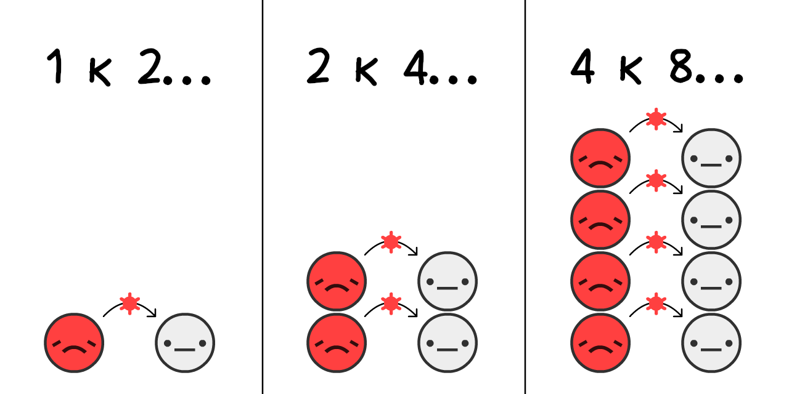
Оценивают, что в начале вспышки COVID-19 вирус переходил с
Если мы симулируем сценарий только удвоения каждые 4 дня, начиная со всего 0.001%
Нажмите "Start"! Вы сможете перезапустить игру с другими настройками: (технические оговорки: 3)
Это кривая экспоненциального роста. Начинается медленно, а потом взлетает. От "Да это просто грипп!" до "Действительно, грипп не выливается в массовые захоронения в богатых странах!"
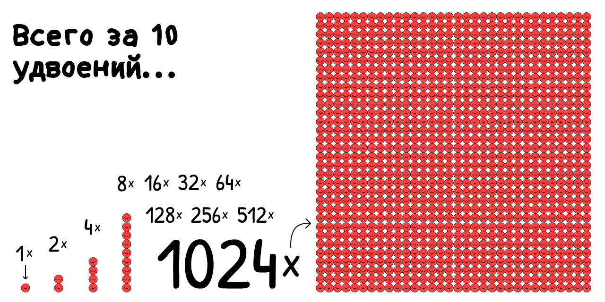
Но эта симуляция неправильная. Экспоненциальный рост, к нашему счастью, не может продолжаться вечно. Одна из причин, которые мешают вирусу распространяться, это то, что у других уже есть вирус.

Чем больше вокруг
Как это меняет рост эпидемии? Давайте выясним:
Это S-образная логистическая кривая. Она медленно растёт, взлетает, а потом снова замедляется.
Но эта симуляция опять неправильная. Мы упускаем то, что
Для простоты, давайте считать, что все
В случае COVID-19 оценивают, что человек
Это противоположность экспоненциального роста, кривая экспоненциального затухания.
Что случится, если мы запустим S-образный логистический рост с выздоровлением?

Давайте выясним.
Красная кривая -- это текущие больные
Серая кривая -- это общее количество случаев (текущие больные и выздоровевшие
Именно отсюда берётся та самая знаменитая кривая! Это не гауссов колокол, и даже не "логнормальная" кривая. У неё нет имени. Но вы видели её миллион раз (текст написан в американских реалиях прим. пер.) и просили её сгладить.
Это модель SIR,5
(
вторая по важности идея в эпидемиологическом ликбезе:
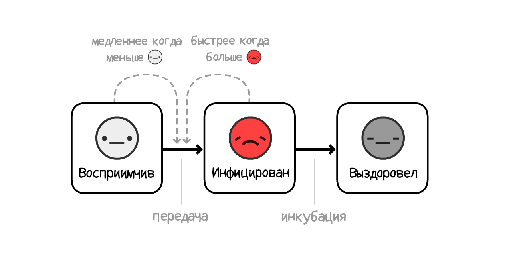
ВНИМАНИЕ: Симуляции, которые используются в планировании политики сильно, сильно сложнее, чем наша! Но модель SIR всё равно может объяснить общие закономерности, даже если она и упускает нюансы.
На самом деле, давайте добавим один нюанс: перед тем как человек из
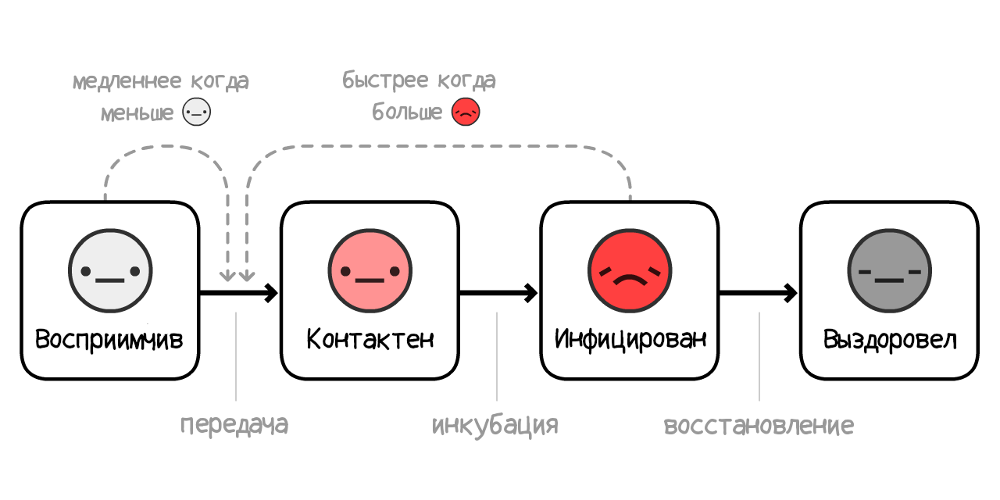
(Это вариант называется модель SEIR6, где "E" значит
Для COVID-19 оценивается, что человек остаётся
Красная + Розовая кривая -- это носители (Заразные
Серая кривая -- это общее количество (носители + Выздоровевшие
Не сильно-то и поменялось! То, как долго человек инфицирован латентно,
Почему так? Из-за главной идеи Эпидемиологического ликбеза:

Сокращение от "Reproduction number" (Индекс репродукции). Это среднее число людей, которых

R меняется по ходу вспышки из-за приобретаемого иммунитета и вводимых ограничений.
R0 — это значение R в начале вспышки, до иммунитета или ограничений. R0 лучше показывает силу вируса, но по-прежнему меняется от места к месту. К примеру R0 куда выше в густонаселённых городах по сравнению с сельской местностью.
(Многие новостные статьи — и даже научные работы! — путают между собой R и R0. Научная терминология не всегда удачна.)
R0 для сезонных гриппов обычно колеблется в районе 1,288. Это значит, что в начале вспышки гриппа каждый
По оценкам, R0 для COVID-19 составляет около 2,2,9 хотя одно из незавершённых исследований даёт оценку в 5,7(!) для Ухани.10
В наших симуляциях — в начале и в среднем —
Поиграйте с калькулятором R0, чтобы увидеть, как R0 зависит от времени выздоровления и интервала между заражениями:
Но учтите, что чем меньше у нас
Как только иммунитет приобретают достаточно много людей, R < 1, то есть распространение удалось остановить. Это называется коллективный иммунитет. Для гриппов коллективного иммунитета добиваются при помощи вакцинации. Ни в коем случае не стоит пытаться достичь "естественного коллективного иммунитета", просто позволяя людям заражаться (Но не потому, о чём вы подумали! Мы объясним это позднее).
Теперь давайте поиграем с моделью SEIR снова, следя за R0 и R со временем, и посмотрим на порог коллективного иммунитета:
Обратите внимание: болезнь не прекратила распространяться после достижения коллективного иммунитета, а заметно перешагнула эту точку! И она пересекает порог ровно в момент, когда число больных достигает пика. (Это происходит при любых настройках — можете сами попробовать!)
Это случается из-за того, что как только не-
Важнейший момент, который стоит вынести из этой статьи, представлен на диаграмме ниже — она весьма запутана, так что уделите достаточно внимания, чтобы полностью осознать её смысл:
Это значит, что нам НЕ обязательно отлавливать всех или почти всех больных, чтобы остановить COVID-19!
Это парадоксально. COVID-19 очень заразный, но чтобы его остановить, нам достаточно "только" предотвратить принятыми мерами 60% заражений. 60%?! Если задание сделано на 60%, за него ставят D- (двойку прим. пер). Но если R0 = 2,2, то 61% даст нам R = 0,975, то есть R < 1 и распространение остановлено! (Точная формула:12)
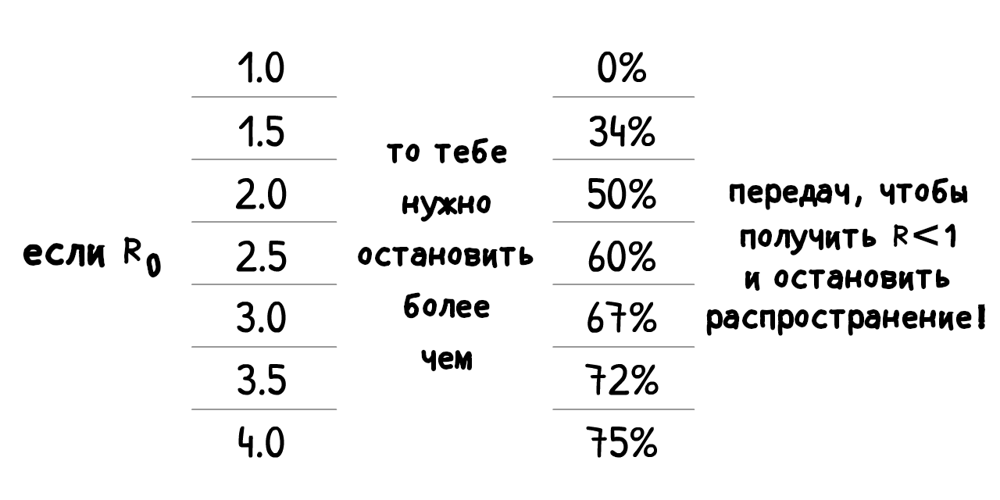
(Если вы думаете, что R0 или другие числа в нашей симуляции слишком низкие или высокие, то здорово, что вы подвергаете сомнению наши предположения! В конце этой статьи будет "режим песочницы", в котором вы сможете подставить свои числа и просимулировать, что случится.)
Каждая принятая мера, про которую вы слышали: мытьё рук, самоизоляция, соблюдение физической дистанции, карантин, отслеживание контактов, закрытие границ, ограничение передвижения, маски и даже "коллективный иммунитет" — они все добиваются одного и того же:
R < 1.
Теперь давайте используем наш "эпидемический симулятор полёта", чтобы выяснить: как мы можем достичь R < 1 сохранив наше психическое здоровье и финансовое состояние?
Приготовьтесь к аварийной посадке...
...могли бы быть хуже. Вот параллельная вселенная, которой мы избежали:
Сценарий 0: Не делать ничего
Около 1 из 20 людей заражённых COVID-19 нуждаются в реанимации.13 В богатых странах вроде США одна кровать в реанимационном отделении приходится на 3400 людей.14 Следовательно, США могут выдержать 20 больных на 3400 людей одновременно — другими словами около 0,6% населения.
Даже если мы более чем утроим это число и примем его за 2%, вот что могло бы случиться, если бы мы ничего не делали:
Ничего хорошего.
Как сказано в докладе Имперского колледжа Лондона от 16 марта, если ничего не делать, то отделения реанимации переполнятся и больше 80% населения переболеют. (Напоминаем: общее количество заболевших превышает порог коллективного иммунитета)
Даже если всего 0,5% заражённых умирают (щедрое предположение, если реанимации переполненны) в такой стране как Россия, с 150 миллионами людей, 0,5% от 80% от 150 миллионов = 600 тысяч умерших... ЕСЛИ бы мы ничего не делали
(Множество СМИ пишут "80% заболеют" без оговорки "ЕСЛИ МЫ НИЧЕГО НЕ БУДЕМ ДЕЛАТЬ". Страх направился на клики, а не на понимание. Вздох)
Сценарий 1: "Сгладить кривую" / Коллективный иммунитет
План "Сгладить кривую" (Flatten the curve) рекламируют все организации здравоохранения, а брттанский план "Коллективного иммунитета" (herd immunity) все ругали. Это был один и тот же план. Великобритания просто плохо его объяснила.15
Тем не менее, оба плана содержат буквально фатальный недостаток.
Давайте вначале посмотрим на два главных способа "сгладить кривую": мытьё рук и соблюдение дистанции.
Частое мытьё рук снижает гриппы и простуды на ~25%[^handwashing], а введение жёсткого карантина в Лондоне сократило количество близких контактов на 70%[^london]. Давайте предположим, что мытьё рук уменьшает R на 25% или меньше, а дистанцирование на 70% или меньше: [^handwashing]: "Все 8 доступных исследований сообщают, что мытьё рук снижает риск респираторных инфекций, но оценивают уменьшение риска по-разному, от 6 до 44%. Усреднённое значение составляет 24%, 90-процентный доверительный интервал — 6-40%." (All eight eligible studies reported that handwashing lowered risks of respiratory infection, with risk reductions ranging from 6% to 44% [pooled value 24% (95% CI 6–40%)].) Мы округлили усреднённое значение до 25% для простоты. Rabie, T. и Curtis, V. Обратите внимание, в этом метаанализе указывают на ужасное качество исследований мытья рук. [^london]: "Мы обнаружили уменьшение в среднем числе контактов на человека в 73%. Этого должно быть достаточно для уменьшения R0 со значения 2,6 до карантина до 0,62 (0,37 — 0,89)." (We found a 73% reduction in the average daily number of contacts observed per participant. This would be sufficient to reduce R0 from a value from 2,6 before the lockdown to 0,62 (0,37 - 0,89) during the lockdown.) Для простоты мы округлили это число до 70%. Jarvis and Zandvoort et al
Поиграйте с этим калькулятором, чтобы увидеть как % не-
Давайте теперь просимулируем, что случится с эпидемией, если бы с марта 2020 года мы стали чаще мыть руки, так что R уменьшится, но всё равно будет выше 1:
Три наблюдения:
Это уменьшает общее количество случаев! Даже если мы не добились R < 1, уменьшение R по-прежнему спасает жизни, уменьшая "перелёт" через коллективный иммунитет. Куча народу думает, что "Сгладить кривую" — это про размазывание болезни без уменьшения общего числа переболевших. Это невозможно в любой простой модели. Но так как в новостях говорят: ">80% будут заражены" с оттенком неизбежности, люди начинают думать, что общее число случаев будет одним и тем же несмотря ни на что. Вздох.
Благодаря дополнительным вмешательствам, количество больных достигает пика до коллективного иммунитета. На самом деле, в этой симуляции общее количество случаев лишь немного переваливает за коллективный иммунитет — Британский план! В этой точке R < 1 и можно прекратить все меры и эпидемия будет сдержана! Но есть одна проблема...
Всё равно не хватает мест в реанимации. На протяжении нескольких месяцев. И помните, что мы уже утроили вместимость палат для этой симуляции!
Это наблюдение из отчёта Имперского Колледжа Лондона от 16 марта убедило Британию отказаться от старого плана. Любая попытка сдерживания (уменьшить R, но оставить его > 1) провалится. Единственный выход — это подавление (уменьшить R так что R < 1).
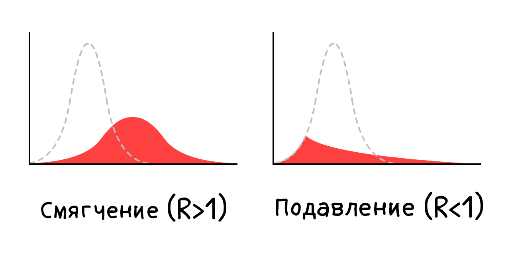
То есть не "Сгладить кривую", а обрушить кривую. Например, введя:
Сценарий 2: Карантин длиной в несколько месяцев
Давайте посмотрим, что случится если мы обрушим кривую при помощи пятимесячного карантина, уменьшив число
Ой.
Это та самая "вторая волна", про которую все говорят. Как только мы убираем карантин, мы снова получаем R > 1. Поэтому единственный оставшийся
Карантин — это не лечение. Это перезапуск.
А что если мы будем вводить карантин снова и снова?
Сценарий 3: Прерывистый карантин
Это решение впервые предложено в отчете Имперского колледжа Лондона 16 марта, а потом в статье ученых из Гарварда.17
Посмотрим на симуляцию: (После воспроизведения записанного сценария вы можете просимулировать собственное расписание карантина, двигая ползунки, пока идёт симуляция! Вы можете ставить симуляцию на паузу и менять её скорость.)
Это позволит избежать переполнения реанимаций! И это сильно лучше чем 18-месячный карантин до изобретения вакцины. Нам надо просто... не выходить из дома несколько месяцев, потом жить как обычно несколько месяцев. Повторять, пока вакцина не будет готова. (И если вакцину не изобретут, повторять, пока мы не достигнем коллективного иммунитета... в 2022 году.)
Конечно здорово нарисовать линию "Вместимость отделений реанимации", но есть много важных вещей, которых мы не можем просимулировать здесь. Например:
Психическое здоровье: Одиночество — это один из главных факторов риска развития депрессии, стресса и самоубийств. И оно влияет на раннюю смерть как 15 сигарет в день.18
Финансовое состояние: "А как же экономика?!" — звучит будто вам деньги важнее жизней. Но "экономика" — это не просто акции: это про возможность людей давать жильё и еду тем, кого они любят, вкладывать в будущее своих детей, наслаждаться искусством, едой и видеоиграми — всем тем, что делает жизнь осмысленной. И кроме того, бедность сама по себе оказывает ужасное влияние на физическое и психическое здоровье.
Мы не говорим, что мы не должны самоизолироваться! Мы посмотрим на "периодический" карантин позже. Он всё ещё не идеален.
Но подождите... Разве Тайвань и Южная Корея уже не победили COVID-19? За 4 месяца и без длительного карантина?
Но как?
Сценарий 4: Тестировать, отслеживать, изолировать
"Конечно, мы *могли бы* сделать то, что Тайвань и Южная Корея сделали с самого начала, но уже слишком поздно. Мы упустили начало."
Но всё складывается! "Карантин — это не лечение. Это перезапуск."... А перезапуск нам и нужен!
Чтобы понять как Тайвань и Южная Корея сдержали COVID-19, нам надо понять типичное развитие болезни19:
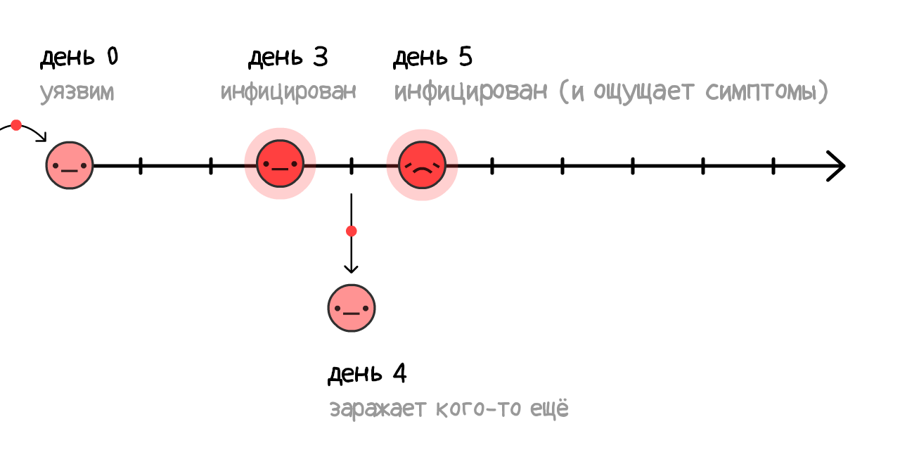
Если больные приступают к самоизоляции только когда понимают, что больны (то есть, когда чувствуют симптомы), вирус всё ещё может распространяться:
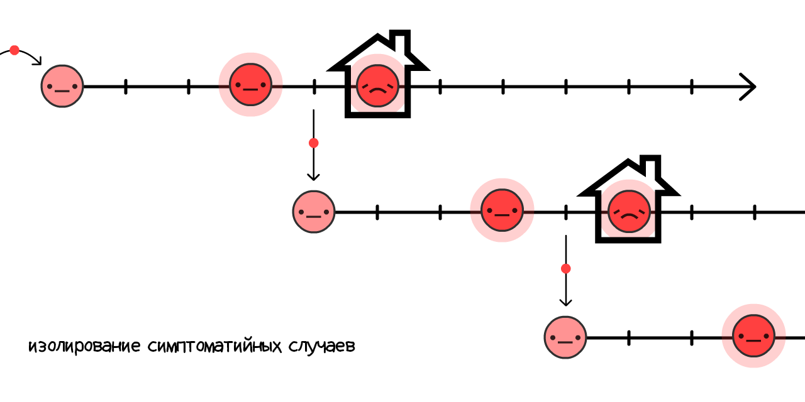
И на самом деле, 44% всех передач вируса именно что пред-симптоматические!20
Но если нам удаётся отследить и поместить в карантин людей, которые недавно контактировали с заболевшим... мы останавливаем распостранение, оказываясь на шаг впереди вируса!
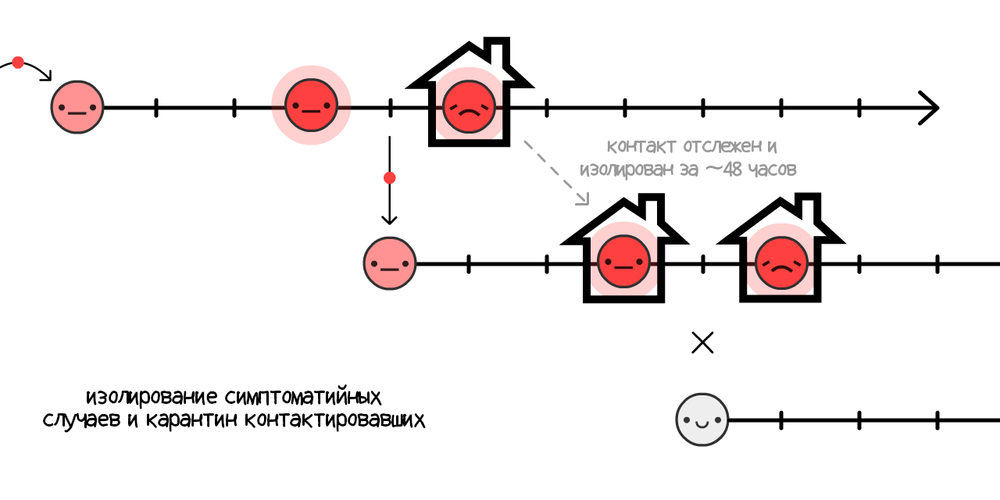
Это называется отслеживанием контактов. Это старая идея, нашедшая весьма масштабные применения во время вспышки Эболы21, и сейчас она является основным средством, с помощью которого Тайвань и Южная Корея сдерживают COVID-19! (Таким же образом в СССР за месяц сдержали вспышку оспы в Москве 1959—196022 — прим. пер.)
(Отслеживание также позволяет более эффективно расходовать ограниченное количество тестов, чтобы отследить предсимптоматических
Изначально контакты отслеживались с помощью личных интервью, но сами по себе интервью недостаточно быстры для ~48-часового окна COVID-19. Именно поэтому отслеживателям контактов нужна помощь, и их можно дополнить — не заменить — отслеживающими приложениями.
Это не идея технарей, которым лишь бы разработать приложение: впервые использовать приложение для борьбы с COVID-19 предложила команда Оксфордских эпидемиологов.
Стоп. Приложения, остлеживающие, с кем вы находились в контакте?.. Значит ли это, что нужно отказаться от приватности, покорившись Большом Брату?
Ничего подобного! DP-3T, команда эпидемиологов и криптографов (включая соавтора этой статьи, Марселя Салате) уже работает над приложением, отслеживающим контакты, — с открытым исходным кодом, — которое не предоставляет никому информацию о ваших личности, расположении и даже числе контактов
Работает оно так:
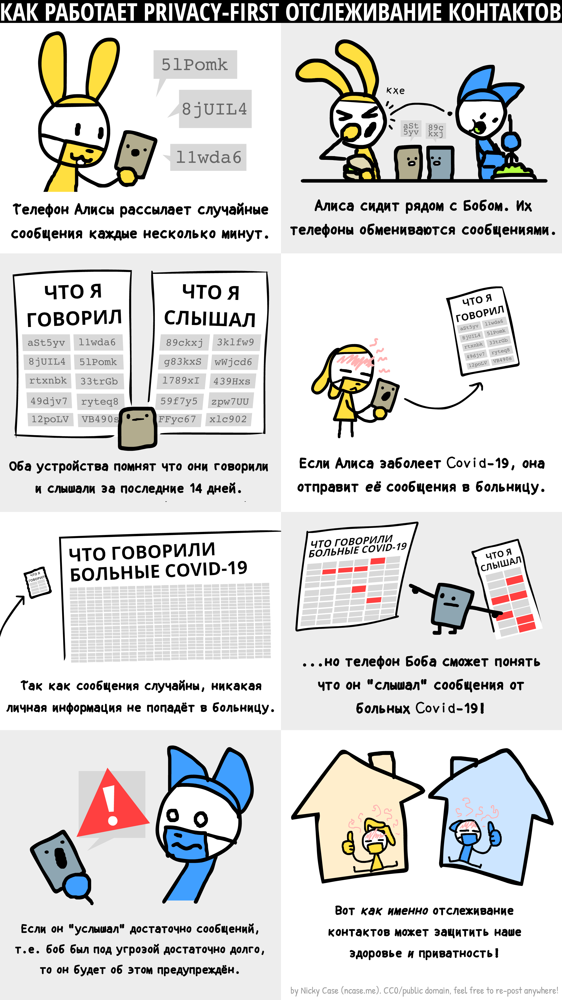
(полная версия комикса (на английском) здесь)
Вместе с подобными командами вроде TCN Protocol23 и MIT PACT24, они вдохновили Apple и Google встроить безопасное отслеживание контактов прямо в Androis/iOS.25. Вскоре ваше местное управление здравоохранения сможет попросить вас загрузить подобное приложение. Если это и впрямь будет безопасное приложение с открытым кодом, непременно сделайте это!
А люди без смартфонов? А инфицированные дверные ручки? А "настоящие" асимптоматические случаи? Приложения, отслеживающие контакты, не могут поймать все передачи... Но ничего страшного! Нам не нужно ловить все передачи, хватит и 60+%, чтобы достичь R < 1.
(Нытьё о путанице между предсимптоматическими и "настоящими" асимптоматическими. "Настоящие" асимптоматические случаи редки:26)
Изоляция симптоматических случаев может уменьшить R на 40%, а помещение в карантин их предсимптоматичеких контактёров может уменьшить R на 50%27:
Итак, даже без 100%-ого помещения контактёров в карантин, мы можем добиться R < 1 без самоизоляции! Что куда лучше для нашего ментального и физического здоровья. (По поводу затрат на людей, которые должны находиться на самоизоляции/карантине, их должно покрывать правительство — оплачивая тесты, защищая рабочие места, субсидируя оплачиваемый отпуск и т.д. В любом случае это окажется дешевле периодического карантина.)
Мы тогда можем сохранить R < 1 до тех пор, пока не появится вакцина, которая превращает
(Внимание: этот калькулятор исходит из предположения, что вакцина на 100% эффективна. Помните что в реальности придётся проводить больше вакцинаций, чем порог коллективного иммунитета, чтобы добиться коллективного иммунитета)
Но хватит рассуждений. Вот симуляция такого сценария:
- Несколькомесячный карантин, а потом...
- Перейти на "Тестировать, отслеживать, изолировать", а потом...
- Вакцинировать достаточно людей, что означает...
- Мы победили.
Вот и всё! Именно так и нужно совершать экстренную посадку на этом рейсе.
Имнно так побеждают COVID-19.
...
Но что, если что-нибудь всё равно пойдёт не так? Уже довольно много чего пошло не так. Мы боимся, и это нормально! Страх придаёт нам сил на продумывание резервных планов.
Пессимист придумал парашют.
Сценарий 4+: Маски для всех, лето, периодический карантин
Что если R0 куда выше, чем нам кажется, или есть другие причины, и даже всех вышеописанных мер, даже с умеренным социальным дистанцированием, всё равно недостаточно, чтобы добиться R < 1?
Не забывайте, что даже если мы не можем добиться R < 1, уменьшение R всё равно уменьшает общее число случаев, спасая жизни. Но всё равно, R < 1 — это идеал, так что вот ещё способы снизить R:
Маски для всех
"Стойте," — скажете вы: "я думал, что маска не защитит меня от заражения?"
Действительно. Маски не защищают тебя от заражения28, они не дают тебе заражать других.
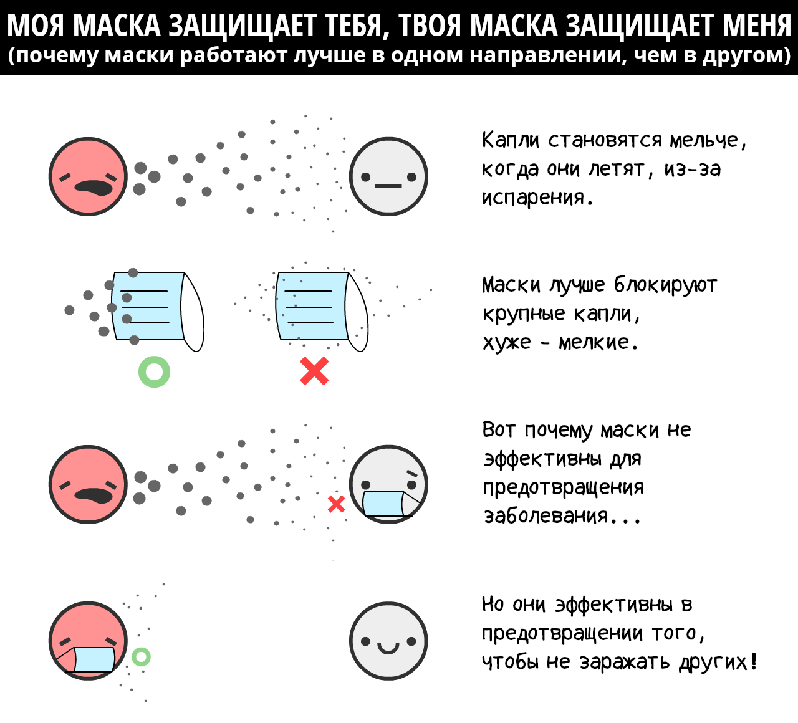
Облекая в числа: хирургические маски на больном человеке уменьшают количество вирусов гриппа и простуды в аэрозоле на 70%.29 Уменьшение передачи на 70% — это такой же эффект как от жёсткого карантина!
Однако мы не знаем наверняка эффект масок именно на COVID-19. В науке следует публиковать открытие, если ты в нём уверен на 95%. (Следует...30) Маски, по состоянию на май 2020, не проходят рубеж в 95%.
Однако, пандемии — они как покер, Если ты делаешь ставки только когда на 95% уверен, то ты проиграешь. Как замечает недавняя статья про маски в Британском Медицинском Журнале, мы вынуджены проводить анализ стоимости и воздействия в условиях неопределённости. Например:
Стоимость: самодельные тканевые маски (достигающие ~2/3 эффективности относительно хирургических масок), очень дёшевы. Хирургические маски дороже, но они всё ещё дешёвые.
Воздействие: Даже если у нас шансы 50-50, что хирургические маски снижают интенсивность передачи вируса на 0 или 70 процентов, среднее "ожидание" всё ещё 35%, как у половины самоизоляции! Так что давайте, ткнув пальцем в небо, посчитаем, что хирургические маски понижают R на 35%, со скидкой на неопределённость. (Как обычно, можете взять свои числа, двигая ползунки вверх-вниз)
(прочие аругменты за и против масок: 31)
"Их тяжело правильно носить." А ещё тяжело мыть руки, полностью придерживаясь рекомендаций ВОЗ — смотрите сами, "Шаг 3 (из 12): Правой ладонью растирать тыльную поверхность левой руки, переплетя пальцы, и наоборот." Но мы всё равно настоятельно рекомендуем мыть руки, потому что даже неидеальные меры лучше, чем ничего.
Из-за этого люди станут менее серьёзно относиться к мытью рук и социальному дистанцированию. Само собой, так же, как люди в ремнях безопасности меньше обращают внимания на дорожные знаки, а после использования зубной нити готовы есть камни. На самом деле, мы утверждаем обратное: маски своим присутствием вечно напоминают об осторожности, а в Восточной Азии они стали символом солидарности!
Маски сами по себе не сделают R < 1. Но если мытьё рук и "Тестировать, отслеживать, изолировать" дадут нам R = 1,10, то если к тому же каждый третий наденет маску, ситуация перевернётся за рубеж R < 1, то есть вирус побеждён!
Лето:
Безусловно, это не то "вмешательство", на которое мы можем повлиять, но оно непременно поможет! Некоторые новостные издания сообщают, что COVID-19 лето нипочём. Они наполовину правы: из-за лета R не станет < 1, но оно точно снизит R.
Для COVID-19, повышение температуры на 1°C понижает R на 1,2%.32 Разница температур между зимой и летом в Нью-Йорке составляет 15°С, так что R должен снизиться на 18%. Для Москвы эти цифры составляют 26°C и 31% соответственно.
Лето само по себе не сделает R < 1, но если наши ресурсы ограничены, можно отозвать некоторые меры в летнее время — чтобы лучше подготовиться к зиме.
Периодический карантин:
А если этого всё равно недостаточно, чтобы добиться R < 1... можно сделать повторный карантин.
Нам не нужно жить в режиме 2 месяца карантина / 1 месяц работы на протяжении длительного времени! Поскольку R снижен, нам хватит одного-двух таких периодических карантинов, чтобы дожить до разработки вакцины. (В Сингапуре недавно пришлось так сделать, "несмотря" на то, что они сдерживали COVID-19 4 месяца. Это не провал: это то, что приводит к успеху.)
Вот симуляция "ленивого сценария":
- Карантин, потом
- Умеренное соблюдение гигиены и "Тестировать, Отследивать, Изолировать", добавить немного масок, потом...
- Ещё один периодический карантин, пока не разработают вакцину.
И это далеко не все меры, которые у нас имеются для дальнейшего понижения R:
- Закрытие границ
- Проверка температуры в торговых центрах и школах
- Дезинфекция публичных заведений
- Замена рукопожатий на ногопожатия
- И всё, до чего способна додуматься человеческая смекалочка
. . .
Мы надеемся, что эти планы дают вам надежду.
Даже при пессимистическом сценарии, мы можем победить COVID-19, защитив наше психическое и финансовое здоровье. Используя самоизоляцию как кнопку перезагрузки, поддерживать R < 1 с помощью изоляции заражённых + безопасного отслеживания контактов + хотя бы тканевых масок для всех... и жизнь может вернуться на круги своя! Ну или почти вернуться.
Мы понимаем, как у вас чешутся руки. Но вы ещё сможете пригласить пассию в магазин комиксов! Вы ещё сможете затусить с друзьями, чтобы посмотреть последний голливудский блокбастер. Вы ещё сможете понаблюдать за людьми в библиотеке, наслаждаясь тем, как люди просто живут.
Даже в самых неблагоприятных ситуациях... жизнь находит, как выкрутиться.
Так что сейчас мы можем перейти к неблагоприятным неблагоприятным ситуациям. Посадка на воду, распаковка спасательного жилета, и, пожалуйста, следуйте по светящимся указателям к аварийному выходу:
Вы подхватили COVID-19 и выздоровели. Или вам поставили прививку. В любом случае у вас иммунитет...
...Надолго ли?
- COVID-19 является близким родственником SARS, который давал переболевшим 2 года иммунитета.33
- Коронавирусы, которые вызывают "обычную" простуду могут дать вплоть до 8 месяцев иммунитета.34
- Есть репортажи о людях, которые переболели COVID-19, а потом сновы получили положительный тест, но эти результаты могут оказаться ложноположительными.35
- Одно неотрецензированное исследование на обезьянах говорит о как минимум 28-дневном иммунитете к COVID-19.36
Но для COVID-19 на людях, по состоянию на 1 Мая 2020, "как долго" остаётся большим вопросом.
Допустим для этих симуляций, что это 1 год. Вот симуляция, начинающаяся со 100%
Возвращение экспоненциального затухания!
В этом состоит Модель SEIRS. Последняя "S" от слова
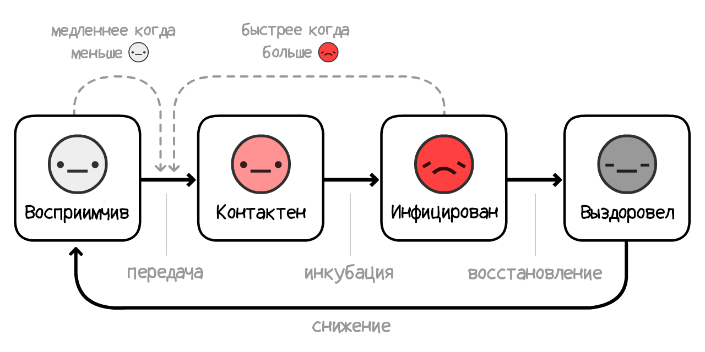
Теперь, давайте симулировать вспышку COVID-19, длящуюся 10 лет, без дополнительных мер... если иммунитет длится год:
В предыдущих симуляциях, у нас был один пик перегруженности системы здравоохранения. Теперь их несколько, и количество
R = 1, стабильность.
К сачстью, поскольку летом R снижается, ситуация меняется к лучшему:
Ой.
Как ни странно, пики становятся хуже и регулярнее! Это случилось потому, что летом становится меньше новых
К счастью, решение этого вопроса крайне прямолинейно — нужно просто прививать людей каждую осень/зиму, как мы обычно и поступаем с гриппом:
(После просмотра этой записи, попробуйте симулировать собственную прививочную кампанию! Не забывайте, что вы можете остановить симуляцию в любое время)
Но есть и более серьёзный вопрос:
Что, если вакцины не будет годами? Или и вовсе никогда?
Мы уточняем: это крайне маловероятно. Большинство эпидемиологов считают, что разрабточка вакцины займёт от 1 до 2 лет. Конечно, раньше вакцин от коронавирусов не делали, но это просто потому, что SARS быстро кончился, а "обыкновенная" простуда не стоит таких усилий.
Во всяком случае, исследователи инфекционных заболеваний выражают озабоченность: Что, если нам не хватиит вакцин?37 Что если мы поспешим, создав небезопасную вакцину?
Даже в кошмарном сне, когда вакцина отсутствует полностью, у нас есть 3 выхода. От наиболее ужасающих к более благоприятным:
1) Поддерживать количество больных на некотором уровне, чтобы достичь "естественного коллективного иммунитета". (Осторожно: может повлечь за собой много смертей и убитых лёгких. И не будет работать, если иммунитет недостаточно стойкий.)
2) Соблюдать снижающие R меры постоянно. Отслеживание контактов и ношение масок просто станет новой нормой в мире после COVID-19, так же как тесты на ЗППП и ношение презервативов стали новой нормой в мире после ВИЧ.
3) Проводить меры по R < 1, пока не появятся методы, после которых коронавирусную инфекцию можно будет чаще переносить без серьёзного врчебного вмешательства. (И к их разработке стоит приступить уже сейчас!) Снижение нагрузки на больницы в 10 раз имеет тот же эффект, что и увеличение числа больниц в 10 раз:
Вот симуляция без длительного иммунитета, без прививок, и даже без каких бы то ни было мер — просто медленное увеличение ёмкости, чтобы лучше переносить пики:
Даже в худшем худшем случае... жизнь находит, как выкрутиться.
. . .
Быть может, вы захотите пересмотреть наши предположения, и попробовать другие R0. Или попробовать симулировать свою собственную комбинацию мер!
Вот (опциональный) Режим Песочницы, в котором всё включено. (Прокрутите ниже, чтобы увидеть управление.) Симулируйте и играйте, сколько душе угодно:
Такой базовый "симулятор эпидемии" научил нас многому. Он позволил нам ответить на ряд вопросов о прошлом и будущем.
И под конец, давайте вернёмся к...
38 Самолёт утонул. Мы перебрались на плоты. Нам нужно найти землю.39
Команды эпидемиологов и политиков (левых, правых, и всех вместе) пришли к консенсусу по вопросам борьбы с COVID-19, стараясь защитить наши жизни и свободы.
Вот основные идеи, и некоторые (менее консенсусные) запасные варианты:
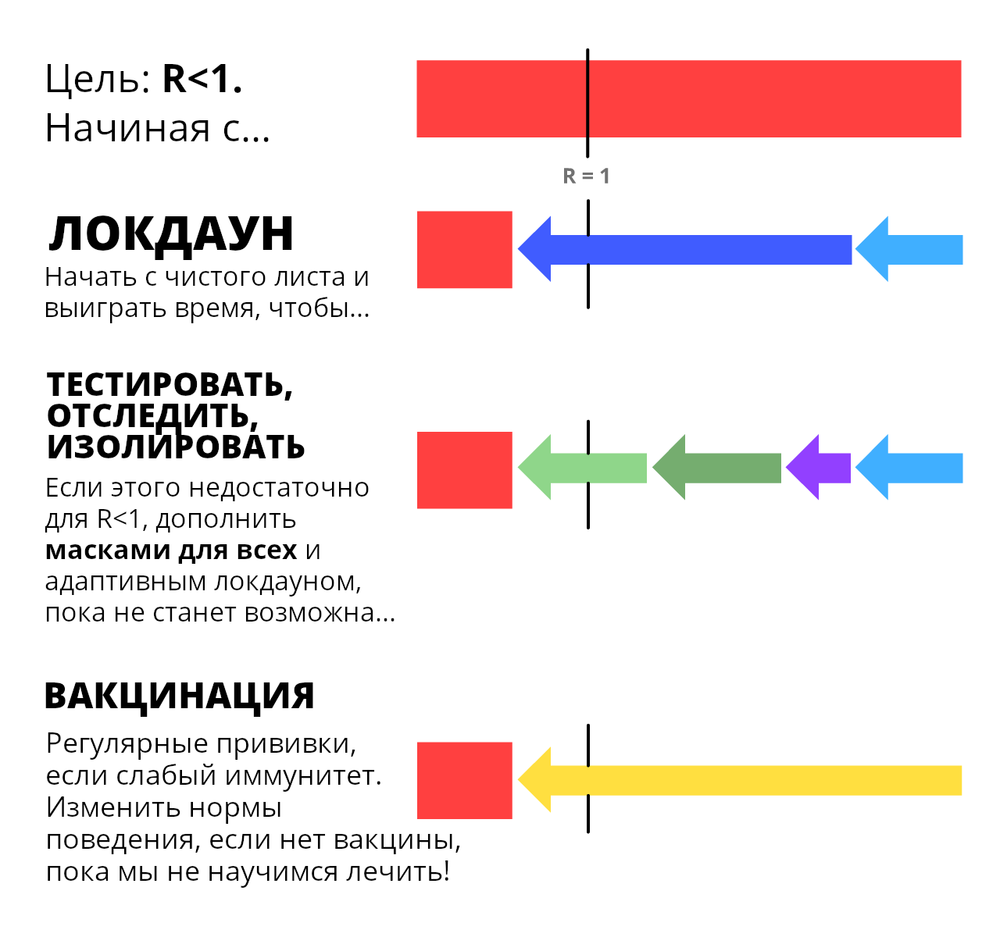
Что это значит для вас, прямо сейчас?
Для всех: Соблюдайте карантин, чтобы как можно скорее выйти из Фазы I. Продолжайте мыть руки. Шейте маски. Загрузите безопасное приложение, отслеживающее контакты, как толкьо оно появится в следующем месяце. Будьте здоровы, как внутри, так и снаружи! И напишите своему депутату, чтобы он оторвал задницу и..
Для политиков: Принимайте законы, которые могли бы поддержать тех, кто вынужден находиться на самоизоляции. Нанимайте больше людей для отслеживания контактов, и поддержите их приложениями. Направьте больше финансирования на создание реально важных вещей, таких, как...
Для производителей: Создавайте тесты. Создавайте аппараты ИВЛ. Создавайте средства личной защиты для больниц. Создавайте тесты. Создавайте маски. Создавайте приложение. Создавайте противовирусные, профилактические и прочие препараты, не являющиеся вакцинами. Создавайте вакцины. Создавайте тесты. Создавайте тесты. Создавайте тесты. Создавайте надежду.
Не стоит недооценивать роль страха в создании надежды. Наш страх должен объединиться с нашей надеждой, как изобретатели самолёта и парашюта. Лишь подготовившись к пугающему будущему, можно создать обнадёживающее.
Единственное, чего нам следует бояться, это идеи, что единственное, чего нам следует бояться, это страха.
Эти сноски содержат источники, ссылки или бонусные комментарии. Как здесь!
Эта статья была опубликована 01.05.2020 (и привязана к американским реалиям прим. пер.). Многие детали устареют, но мы уверены, что эта статья покрывает 95% вариантов развития событий, а эпидемиологический ликбез будет полезен всегда.
(Обновление от 15 Мая: Добавлены цитаты для "1 из 20 инфицированных госпитализируется" и "0.5% инфицированных умирают")↩︎
"Средний [серийный] интервал составил 3,96 days (3,53–4,39 дней)". Du Z, Xu X, Wu Y, Wang L, Cowling BJ, Ancel Meyers L (Дисклеймер: статьи с ранним доступом могут отличаться от финальной версии)↩︎
Помните: все эти симуляции упрощённые и нужны для образовательных целей.
Одно упрощение: Когда вы говорите симуляции "Инфицировать 1 человека каждые X дней", на самом деле она увеличивает количество заражённых на 1/X каждый день. В следующих симуляциях появится настройка: "Период болезни X дней", она аналогично уменьшает количество заражённых на 1/X каждый день.
Это не одно и то же, но довольно близко, и для образовательных целей это понятнее, чем устанавливать показатели передачи вируса и выздоровления напрямую.↩︎
"Медианный трансмиссивный период составил 9,5 дней." (The median communicable period [...] was 9,5 days.) Hu, Z., Song, C., Xu, C. et al Да, мы знаем, что "медиана" — это не то же самое, что "среднее", но для образовательного упрощения это достаточно близко.↩︎
Для более подробного объяснения модели SIR, смотри the Institute for Disease Modeling и Wikipedia↩︎
Больше технических деталей по модели SEIR смотри на the Institute for Disease Modeling и Wikipedia↩︎
“Assuming an incubation period distribution of mean 5.2 days from a separate study of early COVID-19 cases, we inferred that infectiousness started from 2.3 days (95% CI, 0.8–3.0 days) before symptom onset” (перевод: Симптомы начинаются на пятый день, а заразным человек становится за 2 дня до этого = заразным человек становится на третий день) He, X., Lau, E.H.Y., Wu, P. et al.↩︎
"The median R value for seasonal influenza was 1.28 (IQR: 1.19–1.37)" Biggerstaff, M., Cauchemez, S., Reed, C. et al.↩︎
"We estimated the basic reproduction number R0 of 2019-nCoV to be around 2.2 (90% high density interval: 1.4–3.8)" Riou J, Althaus CL.↩︎
"we calculated a median R0 value of 5.7 (95% CI 3.8–8.9)" Sanche S, Lin YT, Xu C, Romero-Severson E, Hengartner N, Ke R.↩︎
В предположении что человек одинаково заразен на протяжении всей болезни. Опять же, мы упрощаем для наглядности.↩︎
Вспомним, что R = R0 × (долю до сих пор возможных при всех принятых мерах и иммунитете заражений). А доля возможных заражений — это 1 - доля предотвращённых заражений.
Поэтому чтобы добиться R < 1, надо добиться R0 × ВозможныеЗаражения < 1.
Следовательно, ВозможныеЗаражения < 1/R0
Следовательно, 1 - ПредотвращённыеЗаражения < 1/R0
Следовательно, ПредотвращённыеЗаражения > 1 - 1/R0
Следовательно, достаточно остановить больше, чем 1 - 1/R0 всех заражений, чтобы получить R < 1 и сдержать распространение!↩︎
"Percentage of COVID-19 cases in the United States from February 12 to March 16, 2020 that required intensive care unit (ICU) admission, by age group". От 4,9% до 11,5% всех случаев COVID-19 нуждались в реанимации. Оптимистично возьмём нижнюю оценку и получим 5% или 1 из 20. Отметим, что это число основано на возрастной пирамиде США, и будет выше в странах со старым населением и ниже в странах с молодым населением.↩︎
"Число кроватей в отделениях интенсивной терапии = 96 596". Из the Society of Critical Care Medicine Население США составляло ~328 миллионов человек в 2019 году. 96 596 к 328 200 000 = около 1 к 3400.↩︎
"Цель такая же, как у других стран: сгладить кривую, растягивая заражение на начальной стадии. Как следствие, у населения выработается коллективный иммунитет; Это побочный эффект, а не цель. [...] План действия правительства, доступный онлайн, вообще не упоминает коллективный иммунитет" (He says that the actual goal is the same as that of other countries: flatten the curve by staggering the onset of infections. As a consequence, the nation may achieve herd immunity; it’s a side effect, not an aim. [...] The government’s actual coronavirus action plan, available online, doesn’t mention herd immunity at all.)
Взято из cтатьи Эда Йонга в The Atlantic↩︎
Это искажение ушло бы, если бы мы изображали R на логарифмической шкале, но тогда нам пришлось бы объяснять логарифмическую шкалу.↩︎
"В отсутствие других воздействий, главная метрика успеха социального дистанцирования — это заполненность реанимационных отделений. Чтобы её избежать, постоянный или прерывистый карантин может быть необходим до 2022 года." (Absent other interventions, a key metric for the success of social distancing is whether critical care capacities are exceeded. To avoid this, prolonged or intermittent social distancing may be necessary into 2022.) Kissler and Tedijanto et al↩︎
Смотри Рисунок 6 из работы Holt-Lunstad & Smith 2010. На самом деле, они нашли корреляцию в существующих выборках. Но было бы жестоко проводить рандомизированный контролируемый эксперимент, заставляя людей быть одинокими всю жизнь.↩︎
В среднем 3 дня до заразности: "Assuming an incubation period distribution of mean 5.2 days from a separate study of early COVID-19 cases, we inferred that infectiousness started from 2.3 days (95% CI, 0.8–3.0 days) before symptom onset" (перевод: Симптомы начинаются на пятый день, а заразным человек становится за 2 дня до этого = заразным человек становится на третий день) He, X., Lau, E.H.Y., Wu, P. et al.
В среднем 4 дня до заражения кого-нибудь ещё: "The mean [serial] interval was 3.96 days (95% CI 3.53–4.39 days)" Du Z, Xu X, Wu Y, Wang L, Cowling BJ, Ancel Meyers L
В среднем 5 дней до первых симптомов: "The median incubation period was estimated to be 5.1 days (95% CI, 4.5 to 5.8 days)" Lauer SA, Grantz KH, Bi Q, et al↩︎
"По нашим оценкам, 44% (при 95%-ом доверительном интервале 25-69%) заражений произошло во время предсимптоматической стадии." (We estimated that 44% (95% confidence interval, 25–69%) of secondary cases were infected during the index cases’ presymptomatic stage) He, X., Lau, E.H.Y., Wu, P. et al↩︎
"Отслеживание контактов в Либерии оказалось ключевым методом и представляет собой один из крупнейших примеров отслеживания контактов во время эпидемии в истории." (Contact tracing was a critical intervention in Liberia and represented one of the largest contact tracing efforts during an epidemic in history.) Swanson KC, Altare C, Wesseh CS, et al.↩︎
"Контакты больного были отслежены с момента его попадания на рейс «Аэрофлота» из Дели до последних дней. Были поимённо установлены не только друзья и знакомые, с которыми он был в контакте, но и таможенники встречавшей его смены, таксист, который вёз его домой, участковый врач и работники поликлиники. Одного из знакомых Кокорекина, отправившегося в Париж, решили снять с рейса «Аэрофлота», когда самолёт был в воздухе. Самолёт развернули, а опасного пассажира и всех, кто был на борту, отправили в карантин." Ликвидация вспышки оспы в Москве 1959—1960↩︎
Temporary Contact Numbers, безопасный децентрализованный протокол отслеживания контактов↩︎
Apple и Google объединились в вопросе отслеживания контактов ради борьбы с COVID-19. Причём они не создают свои приложения, а просто создают системы, которые будут поддерживать эти приложения.↩︎
Многие новостные репортажи — а если честно, и многие научные работы — не делают различия между "случаями, в которых не оказалось симптомов, когда мы их тестировали" (предсимптоматическими) и "случаями, в которых симтпомы вообще не проявились" (настоящие асимптоматические). Единственный способ их отличить — продолжать наблюдения за случаями дольше.
Именно так и поступают в этом исследовании. (Дисклеймер: статьи с ранним доступом могут отличаться от финальной версии) Во время вспышки COVID-19 в колл-центре в Южной Корее "только четверо (1,9%) так и остались асимптоматическими после 14 дней карантина, и никто их их домочадцев не пробрёл вторичной инфекции."
Итак, "настоящие асимптоматические" редки, а подхватить болезнь у асимптоматика — ещё большая редкость!↩︎
Из того же Оксфордского исследования, которое порекомендовало использовать приложения для борьбы с COVID-19: Luca Ferretti & Chris Wymant et al См. рис. 2. В предположении, что R0 = 2,0, они обнаружили, что:
- Симптоматики дают вклад R = 0,8 (40%)
- Предсимптоматики дают вклад R = 0,9 (45%)
- Асимптоматики дают вклад R = 0,1 (5%, хотя их модель включает в себя неопределённость и это число может быть куда меньше)
- Заражение из окружающей среды вроде дверных ручек дают вклад R = 0,2 (10%)
Если сложить пред- и асимптоматические контакты (45% + 5%), получится 50% от R!↩︎
"Никакая из представляенных хирургических масок не фильтрует и не прилегает к лицу достаточно хорошо, чтобы считаться средством респираторной защиты" (None of these surgical masks exhibited adequate filter performance and facial fit characteristics to be considered respiratory protection devices.) Tara Oberg & Lisa M. Brosseau↩︎
"Сокращение на 70% числа копий в аэрозоле, которое мы увидели, вкупе с почти полным исчезновением крупных капель, продемострированным в статье Джонсона, Дрюса, Бёрча и Грейсона, позволяет предположить, что хирургические маски, надетые на инфицированного человека, могут оказывать клинически значимый эффект на передачу заболевания." (The overall 3.4 fold reduction [70% reduction] in aerosol copy numbers we observed combined with a nearly complete elimination of large droplet spray demonstrated by Johnson et al. suggests that surgical masks worn by infected persons could have a clinically significant impact on transmission.) Milton DK, Fabian MP, Cowling BJ, Grantham ML, McDevitt JJ↩︎
Любой учёный, кто читает последнее предложение, вероятно смеётся сквозь слёзы прямо сейчас. Смотри p-hacking the replication crisis)↩︎
"Мы должны сохранить резервные запасы для больниц!" "Полностью согласны", но это скорее спор по поводу увеличения производства масок, не об их рачительном испольовании. Пока суть да дело, можно делать маски из ткани.↩︎
"Повышение температуры на один градус по Цельсию [...] понижает R на 0,0225" и "Среднее значение R в этих 100 городах составляет 1,83" 0,0225 ÷ 1,83 = ~1,2%. Wang, Jingyuan and Tang, Ke and Feng, Kai and Lv, Weifeng↩︎
"SARS-специфические антитела поддерживались на протяжении 2 лет [...] Значит, SARS пациенты могут заразиться повторно после 3 лет после начального заражения." (SARS-specific antibodies were maintained for an average of 2 years [...] Thus, SARS patients might be susceptible to reinfection ≥3 years after initial exposure.) Wu LP, Wang NC, Chang YH, et al.. "К сожалению", мы никогда не узнаем сколько продлился бы иммунитет от SARS, поскольку мы довольно быстро искоренили его.↩︎
"Мы не обнаружили существенной разницы между вероятностью срабатывания теста хотя бы однажды и вероятность возвращения для бета-коронавирусов HKU1 и OC43 на 34 неделе после первого заражения." (We found no significant difference between the probability of testing positive at least once and the probability of a recurrence for the beta-coronaviruses HKU1 and OC43 at 34 weeks after enrollment/first infection.) Marta Galanti & Jeffrey Shaman (PDF)↩︎
"Пока человек только поборол вирус, его частицы могут оставаться в организме. Они не могут привести к инфекции, но могут вызвать срабатывание теста." (Once a person fights off a virus, viral particles tend to linger for some time. These cannot cause infections, but they can trigger a positive test.) from STAT News by Andrew Joseph↩︎
Из Bao et al. Дисклеймер: Эта статья является препринтом и не была подвержена рецензированию. Мы обращаем ваше внимание, что они проверяли повторное заражение только через 28 дней.↩︎
"Когда изобретут вакцину от коронавируса, сможем ли мы произвести её в достаточном количестве?" (If a coronavirus vaccine arrives, can the world make enough?) by Roxanne Khamsi, on Nature↩︎
Метафора с поиском земли Marc Lipsitch & Yonatan Grad, на STAT News↩︎
Метафора с поиском земли Marc Lipsitch & Yonatan Grad, на STAT News↩︎
 ОБЩЕСТВЕННЫМ ДОСТОЯНИЕМ
Это значит что вы уже имеете право переиспользовать и модифицировать
что угодно на этой странице - в блогах, новостных сайтах, образовательных ресурсах, везде!
ОБЩЕСТВЕННЫМ ДОСТОЯНИЕМ
Это значит что вы уже имеете право переиспользовать и модифицировать
что угодно на этой странице - в блогах, новостных сайтах, образовательных ресурсах, везде!